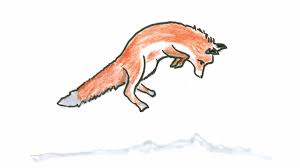

Fun Fact: foxes are starting to domesticate themselves agian.
Foxes were our companions!
Fun Fact: foxes are starting to domesticate themselves agian.
Foxes were our companions!
Foxes are weird, they're always alone and quiet but loud and clingy with the people they like. A Song That Reminds Me of a Fox
New Painting's
I have liked foxes since I was kid. I need to make sure i have enough red paint.
